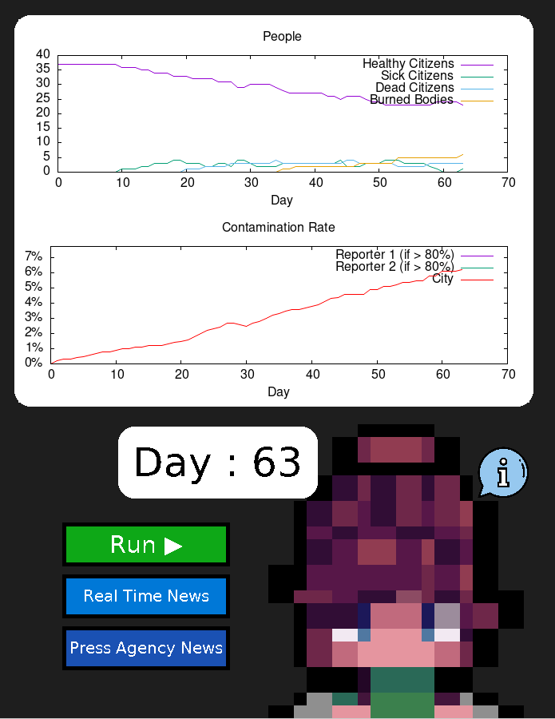

Description
The simulation introduces several roles within the city: firefighters, doctors, and journalists. Firefighters are responsible for disinfecting contaminated areas, doctors provide care for infected citizens, and journalists gather information about the ongoing situation to inform the press agency of the city.
During the simulation, two perspectives are available. The press agency displays the information that journalists have managed to collect, while the real-time news reflects the actual state of the city. This contrast highlights the delay and partiality of information flow compared to the real evolution of the epidemic.